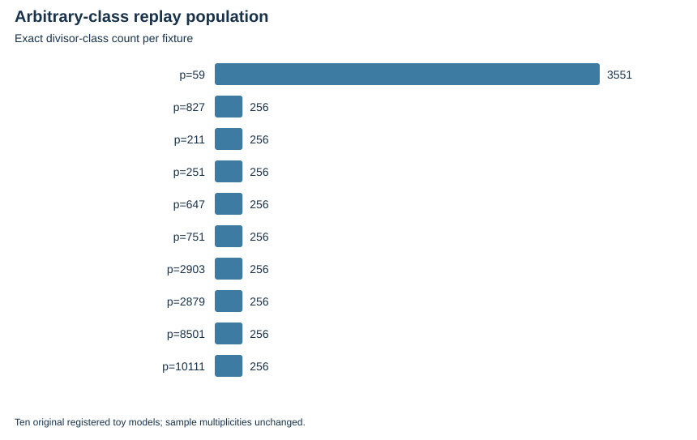

TWIST ROUTES 1–3 · E24 · 2026-10-23 · LOCAL BOUNDED EVIDENCE
All 5,855 divisor classes are replayed: the whole 3,551-class smallest Jacobian and nine original 256-class samples. Generic native norms match both original specialized maps.
Independent PARI checks field/tower conversion, Cantor validity, inverses, deterministic addition partners and both norms for every class. All ten replay adjudications pass. The first field emitter omitted an implicit monic term; the failed attempt and corrected replay are both preserved.
| Source | Classes | Scope |
|---|---|---|
| p=59 | 3551 | exhaustive |
| p=827 | 256 | original fixed sample |
| p=211 | 256 | original fixed sample |
| p=251 | 256 | original fixed sample |
| p=647 | 256 | original fixed sample |
| p=751 | 256 | original fixed sample |
| p=2903 | 256 | original fixed sample |
| p=2879 | 256 | original fixed sample |
| p=8501 | 256 | original fixed sample |
| p=10111 | 256 | original fixed sample |

Balanced two-infinity base-field arithmetic, full formal field/chart bridges, independent-host replay and complete cost measurements remain open.
Verified locally on the same host; complete raw publication is pending artifact-store access. No calibrated speedup, novelty, independent-host replay or NIST DLP is claimed. Original acceptance criteria remain open.
Rust 1.90.0, PARI/GP 2.17.2, one worker except the three-cell E25 orchestration; isolation L0. Caps and limits are in each source-frozen protocol and receipt. Counts are exact finite records; no wall time is admitted. Stochastic uncertainty is not inferred from repeated configurations or targets.
| Receipt / phase | UTC start | Exit | Source pin |
|---|---|---|---|
| jacobian-icv1-fp10-t47-852299b7-20261023-v2-adjudication.json | 2026-10-23T16:02:16Z | 0 | 465b378e5e78 |
| jacobian-icv1-fp10-t47-852299b7-20261023-v2-gp.json | 2026-10-23T16:02:16Z | 0 | 465b378e5e78 |
| jacobian-icv1-fp10-t5-192cb216-20261023-v2-adjudication.json | 2026-10-23T16:02:16Z | 0 | 465b378e5e78 |
| jacobian-icv1-fp10-t5-192cb216-20261023-v2-gp.json | 2026-10-23T16:02:16Z | 0 | 465b378e5e78 |
| jacobian-icv1-fp10-tm21-b87c79a9-20261023-v2-adjudication.json | 2026-10-23T16:02:16Z | 0 | 465b378e5e78 |
| jacobian-icv1-fp10-tm21-b87c79a9-20261023-v2-gp.json | 2026-10-23T16:02:16Z | 0 | 465b378e5e78 |
| jacobian-icv1-fp12-t47-86777f32-20261023-v2-adjudication.json | 2026-10-23T16:02:17Z | 0 | 465b378e5e78 |
| jacobian-icv1-fp12-t47-86777f32-20261023-v2-gp.json | 2026-10-23T16:02:16Z | 0 | 465b378e5e78 |
| jacobian-icv1-fp12-t61-a9fcb1fd-20261023-v2-adjudication.json | 2026-10-23T16:02:17Z | 0 | 465b378e5e78 |
| jacobian-icv1-fp12-t61-a9fcb1fd-20261023-v2-gp.json | 2026-10-23T16:02:17Z | 0 | 465b378e5e78 |
| jacobian-icv1-fp14-t113-1169939b-20261023-v2-adjudication.json | 2026-10-23T16:02:17Z | 0 | 465b378e5e78 |
| jacobian-icv1-fp14-t113-1169939b-20261023-v2-gp.json | 2026-10-23T16:02:17Z | 0 | 465b378e5e78 |
| jacobian-icv1-fp14-t33-d98086ae-20261023-v2-adjudication.json | 2026-10-23T16:02:17Z | 0 | 465b378e5e78 |
| jacobian-icv1-fp14-t33-d98086ae-20261023-v2-gp.json | 2026-10-23T16:02:17Z | 0 | 465b378e5e78 |
| jacobian-icv1-fp6-tm7-fc20da94-20261023-v1-gp.json | 2026-10-23T02:45:26Z | 0 | f9e5354058c4 |
| jacobian-icv1-fp6-tm7-fc20da94-20261023-v2-adjudication-stack-v2.json | 2026-10-23T16:02:16Z | 0 | 465b378e5e78 |
| jacobian-icv1-fp6-tm7-fc20da94-20261023-v2-adjudication.json | 2026-10-23T02:49:56Z | 1 | b6d1fca72060 |
| jacobian-icv1-fp6-tm7-fc20da94-20261023-v2-gp.json | 2026-10-23T02:49:55Z | 0 | b6d1fca72060 |
| jacobian-icv1-fp8-tm21-71e3bcb7-20261023-v2-adjudication.json | 2026-10-23T16:02:17Z | 0 | 465b378e5e78 |
| jacobian-icv1-fp8-tm21-71e3bcb7-20261023-v2-gp.json | 2026-10-23T16:02:17Z | 0 | 465b378e5e78 |
| jacobian-icv1-fp8-tm5-23216e9c-20261023-v2-adjudication.json | 2026-10-23T16:02:18Z | 0 | 465b378e5e78 |
| jacobian-icv1-fp8-tm5-23216e9c-20261023-v2-gp.json | 2026-10-23T16:02:18Z | 0 | 465b378e5e78 |
| jacobian-independent-20261023-v1.json | 2026-10-23T02:43:47Z | 0 | f9e5354058c4 |
| jacobian-independent-20261023-v2.json | 2026-10-23T02:48:10Z | 0 | b6d1fca72060 |
Native assessment: ../../execution-v2/assessment-20261023-v3/ASSESSMENT.json. Raw members: runs/jacobian-independent-20261023-v1 and -v2; individual GP/adjudication attempts. Source/input/binary hashes and exact argv: E24-receipts.json and ../../execution-v2/receipts/.